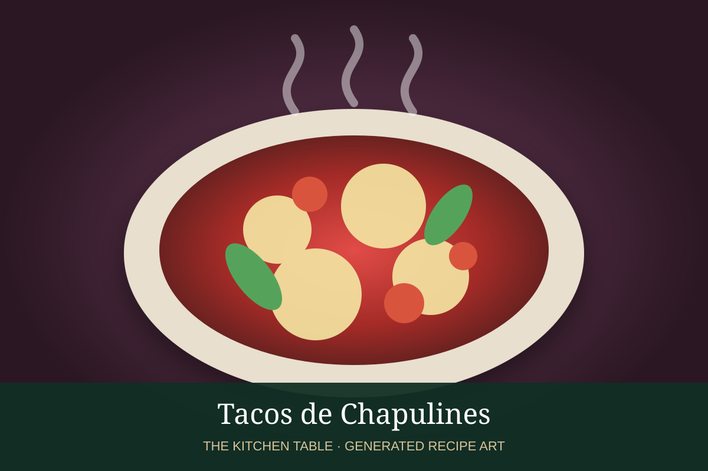

← Back to all recipes
CHAPULINES · MEXICAN
Tacos de Chapulines
Oaxacan-style toasted chapulines seasoned with garlic, chile, lime, and salt, served with onion, cilantro, and queso fresco.
20 minMakes 8 tacos

Photo: ItsOnly.Recipes
Ingredients
- 2 cups cleaned toasted chapulines
- 1 tbsp olive oil
- 1 garlic clove, minced
- 1/2 tsp chile powder
- Juice of 1 lime
- 8 corn tortillas
- Chopped onion
- Cilantro
- Queso fresco
- Radishes
- Salt
Preparation
- Heat oil and cook garlic briefly.
- Add chapulines and toast until hot and crisp.
- Season with chile powder, lime, and salt.
- Warm tortillas.
- Fill with chapulines and top with onion, cilantro, queso fresco, radish, and extra lime.